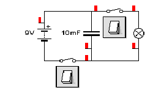
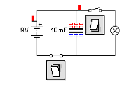
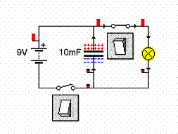
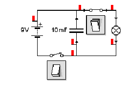

| FUNCIONAMIENTO DEL CONDENSADOR | |
|
 |
En primer lugar, cerramos el interruptor de la izquierda. Al hacerlo, pasará corriente por el condensador y el condensador se carga |
|  |
Una vez cargado, podemos desconectar el interruptor de la izquierda y conectar el de la derecha. Al hacerlo, el condensador hará las veces de pila suministrando corriente a la bombilla durante un tiempo, hasta que se descargue. En función de la capacidad del condensador, la bombilla durará más o menos tiempo encendida: |
|  |
Pasado un tiempo, que depende como hemos dicho de la capacidad, el condensador se descarga y la bombilla volverá a apagarse: |
|  |
Repite estos circuitos con el programa CROCCLIP. |